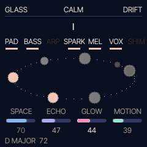
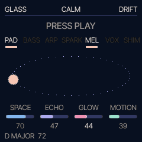

Dream firmware for the M-VAVE FM-1 · haave: Finnish for a daydream, a reverie
Haave turns the FM-1 into a small, simple instrument for dreamy, ambient, meditative music. Press PLAY and a gentle chord progression starts and keeps going by itself. Add and remove layers, move the harmony, play along, and shape the sound live with four knobs. Every note fits, so it always sounds good. No menus, no drums.
The browser version runs the same code as the instrument, with sound. Chrome or Edge recommended.

The real screen, recorded from the firmware: GLASS playing.
I'm not a music expert, and Haave isn't meant to be a full synthesizer. It deliberately limits what the FM-1 can do: fewer functions and fewer options, so all that's left is playing melodic, dreamy, drifting sounds. I use it for live meditation, together with my singing bowls: slow, soft and relaxing, with nothing to get lost in.
If you want everything the FM-1 can do, use Felucca, which Haave is built on.

Go through the steps, or tap any control on the FM-1.
Fourteen worlds, each with its own sounds, key, tempo, room and picture. Turn PRESETS to change world; the music dips out and comes back in the new one. Point at a world, or tap it, to see its picture move.
Haave isn't released for everyone yet. It runs on my own FM-1, and here in your browser.
Once it's released, you'll connect the FM-1 by USB, open the installer in Chrome or Edge and press Install. Nothing else will be needed, and the same installer can take you back to M-VAVE's official firmware (V15) at any time.
Installing custom firmware is at your own risk. Haave is young and has had little testing on real devices. Keep M-VAVE's official V15 firmware file ready before you install.